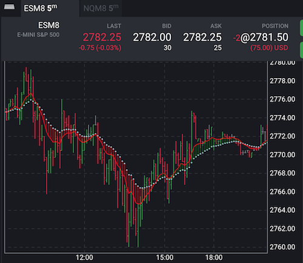

Plotters
So far our indicators plotted only lines. But there is a variety of other plotters in Tradovate Trader: dots, columns, specialized plotters that you can find out in some complex built-in indicators.
As an example, we are going to replace the 'slow EMA' line with dots. The plotter will place one dot per each bar.
To achieve it, we need to implement the Indicator.plotter field in the module's exports:
...
module.exports = {
name: "doubleEma",
description: "Double EMA",
calculator: doubleEma,
params: {
slowPeriod: predef.paramSpecs.period(21),
fastPeriod: predef.paramSpecs.period(10)
},
tags: ["My Indicators"],
plots: {
fast: { title: "FastEMA" },
slow: { title: "SlowEMA" },
},
plotter: [
predef.plotters.dots("slow"),
predef.plotters.singleline("fast"),
],
schemeStyles: {
dark: {
fast: {color: "red"},
slow: {color: "lightblue"}
}
}
};
Moreover, we can implement even our own plotter. Since we have two closely related plots, it would be nice to connect them at each bar. It will look like DNA.
Below we've implemented the dnaLikePlotter function and mentioned it in our list of plotters. We didn't touch old plotters, just added one more.
All that the plotter function does is drawing basic lines from one point to another. The application calls this function with three arguments: canvas, calculatorInstance, and history (see Custom.function).
canvas represents a chart area and has several methods to place drawing to it: to draw a line from one point to another, to draw a complex path with multiple points. The canvas is going to be a rich structure with more functionality to come.
calculatorInstance refers to the instance of our calculator class. The plotter can access its fields if needed. For example, calculatorInstance.props.slowPeriod is available there.
history is an object that stores the results of our calculations.
const predef = require("./tools/predef");
const EMA = require("./tools/EMA");
const p = require("./tools/plotting");
class doubleEma {
init() {
this.slowEma = EMA(this.props.slowPeriod);
this.fastEma = EMA(this.props.fastPeriod);
}
map(d) {
const value = d.value();
return {
slow: this.slowEma(value),
fast: this.fastEma(value)
};
}
}
function dnaLikePlotter(canvas, calculatorInstance, history) {
for(let i=0; i<history.data.length; ++i) {
const item = history.get(i);
if (item.slow !== undefined && item.fast !== undefined) {
const x = p.x.get(item);
canvas.drawLine(
p.offset(x, item.fast),
p.offset(x, item.slow),
{
color: item.fast > item.slow ? "green" : "red",
relativeWidth: 0.5,
opacity: 0.5
});
}
}
}
module.exports = {
name: "doubleEma",
description: "Double EMA",
calculator: doubleEma,
params: {
slowPeriod: predef.paramSpecs.period(21),
fastPeriod: predef.paramSpecs.period(10)
},
tags: ["My Indicators"],
plots: {
fast: { title: "FastEMA" },
slow: { title: "SlowEMA" },
},
plotter: [
predef.plotters.dots("slow"),
predef.plotters.singleline("fast"),
predef.plotters.custom(dnaLikePlotter)
],
schemeStyles: {
dark: {
fast: {color: "red"},
slow: {color: "lightblue"}
}
}
};

The plotter function above involves the plotting built-in module. The module contains a bunch of helper functions to simplify plotting. In our case, we use plotting.x.get to retrieve the X coordinate of the item.
The function plots each line with red or green color and tells the app to draw them with half opacity and width equals to half-space between bars ({@linkcode plotting.x.relativeWidth}.
Generated using TypeDoc